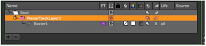
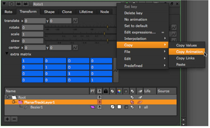

You can transform grids and splines in the same way as any other element in Nuke (see Temporal Operations), but you can also link control points to the Tracker and PlanarTracker nodes to automate any transforms you require. Once you have a suitable track, you can use the animation data to control points on grids and curves.
| 1. | To generate tracking data, see Tracking and Stabilizing . |
| 2. | Make sure both the Tracker and the GridWarp/SplineWarp properties panels are open, then either: |
• Ctrl/Cmd+drag the animation button from the Tracker node properties on top of the individual grid/curve point in the Viewer. When you release the mouse, the point follows the animation from the Tracker node,
OR
• Right-click on the required control point and select Link to > Tracker1 and select the required transform type.
| 1. | To generate PlanarTracker data, see Tracking with PlanarTracker. |
| 2. | Use the Draw Boundary button to create a source grid roughly the same shape as the tracked plane, or draw similar splines. |
| 3. | On the GridWarp/SplineWarp and RotoPaint Transform tabs, open up the Transform tab extra matrix. |
| 4. | On the RotoPaint Transform tab, select PlanarTrackerLayer1 in the curves list. |

| 5. | Copy and paste the extra matrix animation from RotoPaint to the GridWarp/SplineWarp extra matrix. |

| 6. | Play through the sequence to check that the grid or splines follow the plane. |
As well as using other nodes to control points, you can do the inverse, using expressions to link control points and their tangents to other operations.
The expressions take the following form:
• GridWarp3_1.destination_grid_col.1.2.pos.x
• GridWarp3_1.destination_grid_col.2.2.tangent.1.x
NOTE: Control points are indexed starting from the bottom left 1.1, in x.y order, and tangent points are labelled 0, 1, 2, and 3 corresponding to north, south, east, and west respectively.
It’s worth mentioning that in order to get the true position of a tangent, not its offset value, you need to concatenate the pos and tangent expressions. For example:
GridWarp3_1.destination_grid_col.2.2.pos.x + GridWarp3_1.destination_grid_col.2.2.tangent.4.x
NOTE: You can only modify tangent positions using the Curve Editor.
For more information, refer to Expressions.
|
|